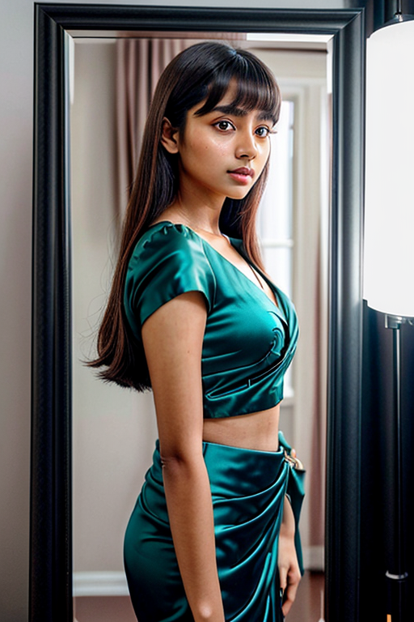
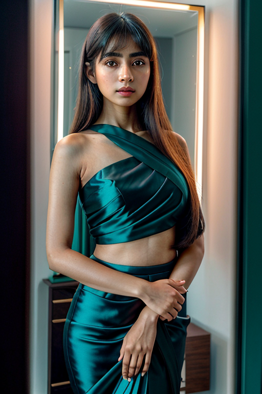

This set explores selfie mirror photo booth buy through retro aesthetics and moody tone under soft lighting. Compositions use leading lines with indoor studio, keeping focus clear and tidy. Details like office styling and balanced colors make browsing easy.
Browse mirror images. Page 2 of curated mirror-style portrait collection.


Here we highlight page2, aiming for clean structure, quick scanning, and useful context. Alt text and headings are optimized to make the content accessible and to provide consistent cues across the site. Subtle differences in wording help avoid duplication across similar pages. If you are comparing alternatives, keep an eye on subtle differences in framing, contrast, and color balance. The image aims to deliver a straightforward visual impression while keeping the file lightweight. A brief explanation clarifies the subject and lighting so visitors can quickly decide where to go next. Internal navigation leads to related items with comparable tone or composition. This reduces bounce and supports exploration within the same theme. Alt text and headings are optimized to make the content accessible and to provide consistent cues across the site. Subtle differences in wording help avoid duplication across similar pages. For more context, browse related entries linked nearby; each page offers a slightly different angle to limit overlap.